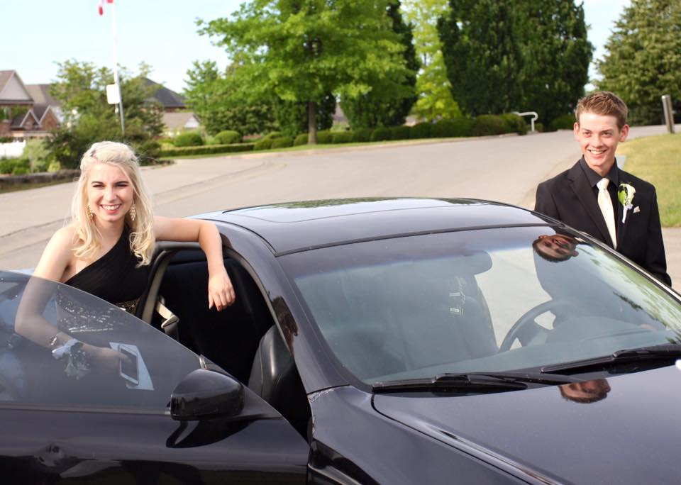
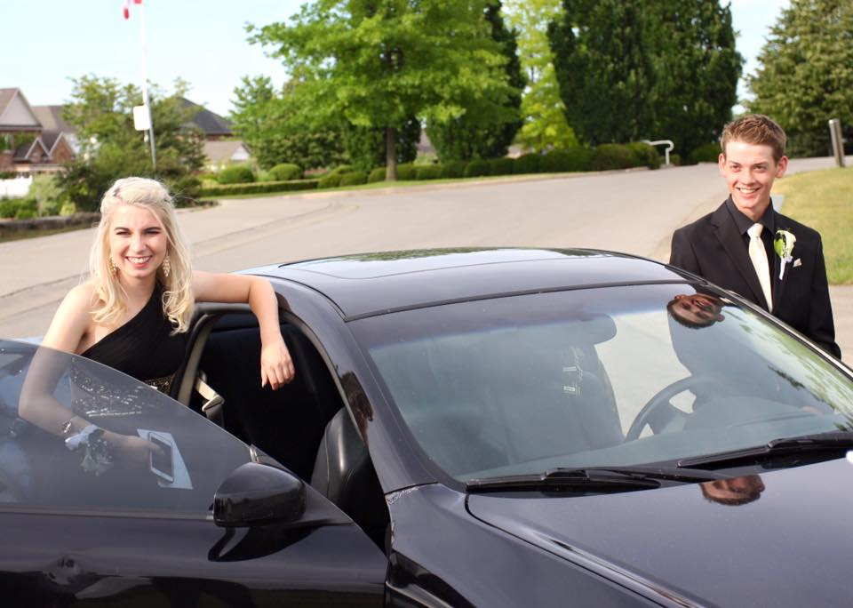

Yearbook 21
By: Cassie Wilkinson
This is a compolation of memories and photos thoroughout my 21 years of life. It is a depiction of how ive come to be with everything I have experienced and all the people that have become close to my heart. It will involve milestones, heartbreaks, achievements and loss but that is what my 21 years of life on this earth has come to be; a lot of emotion.
 
